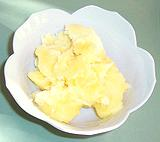

SAFARI
Users
History
- and general informationCooking with Oils & and Fats
Varieties
- descriptions and usesSmoke Point and Composition Chart
- a comparative summaryOils, Fats & Health
- raging controversy prevailsLinks
- to other Oil and Fat sites
History
Before the first permanent settlements, nutrient oils came from insects, animals, nuts and grains eaten on a "catch as you can" basis. Nomadic people learned to render fat from animals and how to use it for cooking and to preserve foods with a combination of fat, smoking and sun drying.
Once villages were established the technology of extracting oils by heat and pressure was quickly refined and oils were extracted from oily fruits (olives, mainly, and perhaps sunflower seeds) as well as animals. Properly processed oils and fats could be stored much longer than the perishables they were extracted from and could tide a village over times of food shortage.
Even so, most communities had only a single dominant type of oil and little else. Modern technology and transportation have provided us with a wealth of flavors for a wide choice for different cooking methods and for health. The health part, however, has become highly controversial (see our article Oils, Fats and Health).
Varieties
General
: Oils and fats are pretty uniform at 120 calories per tablespoon. The only exceptions are semi-solid products sold whipped with a lot of air - fewer calories by the tablespoon but still the same per ounce. The words "Light", "Lite" and similar applied to oils refer to taste, not to calories.For Smoke Point and Fat Type Content, refer to our Oils Chart.
Achiote Oil / Lard
- see Annatto Oil.Almond Oil
 While the smoke point of refined almond oil is high (495°F/255°C),
you're more likely to find this oil as an "unrefined" oil which should be
used for low temperature applications because taking it too high
will destroy the flavor you paid extra for.
While the smoke point of refined almond oil is high (495°F/255°C),
you're more likely to find this oil as an "unrefined" oil which should be
used for low temperature applications because taking it too high
will destroy the flavor you paid extra for.
Annatto Oil / Annatto Lard
- [Lara (Spanish), Achiote Oil / Lard]Oil or lard infused with Annatto Seeds which dye it an intense red-gold color (orange to yellow as thinned) and give it a subtle warm flavor. This oil is important in Cuban, Filipino, Portuguese, Mexican, Puerto Rican, and Jamaican Cooking.
You can make it easily by adding 1/2 cup annatto seeds to 1 cup oil
(or 1 cup annatto to 1 cup lard) then heating and stirring over moderate heat
until the desired color is achieved (overheating will cause it to lose its
red color and flavor). Alternately for oil, heat to 350°F, take off heat
and stir in annatto. Continue stirring until foaming stops and desired color
is achieved.
Argan Oil
This oil was, until recently, almost unknown outside Morocco. It is used as a dipping oil, as a cooking oil, and is important in cosmetics, having a very high vitamin E and phenol content. This oil is now much more widely known due to conservation efforts and is now exported as a high value product making properly managing the trees economical. Details and Cooking. Photo distributed under license Creative Commons Attribution-ShareAlike 3.0 Unported.
Avocado Oil
Here we have a real smoke point champion (520°F/270°C). If you want to sear meat quickly, or some other very high temperature application, this is the way to go. It has a lightly buttery flavor and is also a very healthy oil with a profile similar to Olive Oil. It is becoming more widely available and here in Southern California can be had at costs similar to quality olive oil.
Beef Fat
- [Suet, Tallow]Suet is fat from the abdominal cavity of a cow or sheep and makes the best tallow, but meat packers more likely use any fat found on the animal. This is "rendered" by boiling and skimming to produce a purified white fat called tallow.
Well made tallow can be kept at room temperature much longer than suet without spoiling. This fat was once used to make candles and as a lubricant but today is used mainly to make soap and industrial products, and by "fast food" restaurants as a low cost ingredient. It is also favored as a binder and nutrient in making winter feed blocks for song birds.
Beef fat is, of course, the primary flavoring and moistening agent in
beef, particularly American beef which has been bred and fed to maximize
"marbling". Consequently, fat cannot be largely removed from beef as it
can be from other animal meats because it's shot through the muscle. On
the other hand, the beef is of inferior edibility without it.
Photo by Daniel Schwen distributed under license Creative
Commons
Attribution-ShareAlike 3.0 Unported.
Butter / Ghee
Whole butter is a mix of fats, milk solids and moisture derived by churning cream until the oil droplets stick together and can be separated out. Shown are the standard 1 pound block and 1/4 pound sticks, and a jar of ghee (see below). Note that east of the Mississippi 1/4 pound sticks are longer and narrower.
Butter is high in saturated fats which cause it to be solid at normal room temperature. Whole butter can be used only at low temperatures because included milk protein solids brown and then burn easily. Overheated butter loses much of its flavor and severely overheated butter will be bitter.
Note that observant Jews cannot fry any dish containing meat in any
form of Butter, because mixing dairy with meats is forbidden. For this
reason they make considerable use of
Schmaltz (rendered
chicken or goose fat).
Clarified Butter:
This is butter that has been warmed until it is liquid. Any residue that floats to the top is skimmed off and discarded, the clear oil is poured off and the solids that sink to the bottom are discarded. Clarified butter can be used at a higher temperature than whole butter and is resistant to rancidity, but it does lack much of the flavor of whole butter.Ghee:
This is a very thoroughly clarified and purified butter fat used as a major cooking oil through much of India and surrounding regions. Because it is so thoroughly purified of all moisture and solids it can be used at higher temperature and is much more resistant to rancidity than more casually purified clarified butter. Pots of ghee buried by nomads have been found in excellent condition even after a couple hundred years. Details and Cooking.Many Indians now use Vegetable Ghee [vanaspati ghee, Dalda], similar to Western vegetable shortening, because they've been told it is healthier, and it is cheaper. Unfortunately much of it is made using trans fats, now known to be very non-healthy. Some is made using Coconut Oil which is probably much healthier. This brings us to points of great controversy (see our Oils and Health page).
Sweet Butter:
This is butter that has not been salted. It's called for by many European recipes, and an increasing number of North American recipes. It would seem if you're going to add salt anyway salted butter would be fine, but gourmets say they get better control adding all salt separately. Sweet butter will go rancid much more quickly than salted butter so must be kept refrigerated and used in a short time.
Camellia Oil
- see Tea Oil.Camelina Oil
- [False Flax, Camelina sativa]
This oil, from the seeds of a plant of the mustard family, is getting
a lot of attention due to the very favorable Omega-6 / Omega-3 balance
(23.0% / 31.2%) and its high content of antioxidants and vitamin E which
make it quite resistant to oxidation. Used as a cooking oil it has a
slight almond flavor. It is also getting a lot of attention as a possible
biofuel for jet engines. This plant is native to Europe and Central Asia,
and has been cultivated as an oil seed plant for at least 4000 years.
Photo by Fornax distributed under license
Creative Commons
Attribution v3.0.
Canola Oil
- [Lear Oil, Brassica campestris]"Canola" is an invented name (Canada + oil + low acid) for genetically modified rapeseed oil. Technically it is "low erucic acid, low glucosinolates rapeseed oil". Originally this modification was by breeding but recently it's by "engineering", with 80% of the crop now considered "GM".
Rapeseed oil was long an important lubricant for machinery exposed to water and steam, so during World War II, when European and Asian supplies were cut off, large plantings were established in Canada. After the war new markets needed to be found, so voila! "Health food".
Rape is a member of the mustard / cabbage family. Stems of leaves are sold in Asian markets as Yu Choy, and it's a fine vegetable - but unmodified rapeseed oil is high in erucic acid, thought to cause of heart lesions in humans and animals. The FDA consider it unfit for food. The genetically modified Canola version has under 2% erucic acid and is listed by the FDA as GRAS (Generally Regarded As Safe), though it's rumored that listing cost Canada a bundle.
Canola is now intensely promoted by the seed oil industry as the healthiest
of all cooking oils, pointing to it's high monounsaturated and Omega-3 fat
contents. The success of this promotion is shown by the many cookbooks now
specifically listing Canola oil in every recipe calling for cooking
oil. As usual with industry promotions, there's negative stuff swept
under the carpet. Some experts point to dangers and a few even call it
unfit for human consumption - but those shrill Internet tracts about mustard
gas are completely without merit. For more details see our
Canola Oil page,
Photo by Prazak distributed under license
Creative Commons
Attribution v3.0.
Castor Oil
Pressed from the seeds of a member of the spurge family, this oil tastes awful so you don't want to use if for cooking. Traditionally, castor oil was used as a gentle laxative and to induce vomiting. Today it is used in a large number of industrial products and processes, but not in food. The beans from which it is squeezed also contain ricin, one of the most toxic substances known, but it is not in the oil.
Chicken Fat
Important in European Jewish cooking but otherwise little used today. Schmaltz (rendered chicken or goose fat) is used as a spread for bread and to cook chopped liver and potato pancakes. Goose fat is preferred for its flavor, if available. Photo distributed under license Creative Commons Attribution-ShareAlike 3.0 Unported.
Coconut Oil
Coconut oil is either the most deadly oil you can consume, or the most healthy cooking oil on earth - depending on which panel of "experts" you chose to believe. Demographics favor "healthy". It is the most used cooking oil in southeast India, Maylasia, Indonesia and the Philippines - not regions noted for high incidence of congestive heart disease.
Coconut oil is 91% saturated fats and only 3% polyunsaturated fats. It is highly resistant to rancidity, so can be stored at room temperature for long periods of time, and is a preferred ingredient for many products that will be stored at room temperature. Of course, with all that saturated fat it's pretty stiff, with a melting point of 76°F/24.4°C.
Coconut oil has an extremely low oxidation factor so it is highly
durable as a frying oil, even more durable than beef tallow. Virgin oil
has to be kept below 350°F/175°C, but RBD (refined) oil can go
as high as 450°F/232°C.
Details and Cooking.
Cod Liver Oil
See Fish Oil except cod liver oil is very high in vitamin D and used as a supplement for those short of that vitamin. Photo © b0008.jpg
Corn Oil
- [Maize Oil (UK)]
Corn oil, along with Soy Oil is a dominant ingredient in supermarket general
purpose frying/salad oil. This oil is manufactured in vast quantity in the
U.S. (and corn growers are promoting it as a motor fuel in hopes of pushing
the price up). Since there are better oils for any particular purpose, and
even for general purpose (Grape Seed,
Canola), I see no reason to use it unless price is the
only consideration.
Cottonseed Oil
Rarely found on store shelves, cottonseed oil is used in massive quantity by the food industry, particularly for salad dressing and for hydrogenated or partially hydrogenated oil products such as vegetable shortening, margarine and hydrogenated fry oils used by the fast food and snack food industries. New "zero trans fats" products generally depend on fully hydrogenated cottonseed oil for their room temperature solidity and resistance to heat and rancidity. Photo by USDA = public domain.
Dende Oil
- see Palm Oil.Duck Fat
Duck and Goose fat are very flavorful and particularly excellent for frying potatoes. As with all animal fats the smoke point is moderate (375°F/190°C) and you don't want to get too close to it or you'll lose flavor, so fry slowly. This is not a commercial product in the U.S., so you'll have to render your own when you cook a duck.
Duck Butter is a water soluble lubricant used in stretch forming
aircraft skins and in plumbing. I'm not sure if it is now or ever was made
out of ducks.
Photo © i0035.
Fish Oils
Fish oils are generally not sold in bottles for cooking use (though health food purveyors do sell it in capsules). Fish oils are particularly high in Omega-3 polyunsaturated oils which all sides of the oils vs. health battles pretty much agree is highly beneficial. Omega-3 oils appears to reduce the incidence of various cancers to perhaps an even greater degree than the Omega-9 monounsaturated oils in Olive Oil.
This opinion appears to be supported by the evidence of ethnic
populations that eat a lot of fish. These oils are best added to the diet
by eating oily fish such as mackerel, tuna, salmon and herring. While the
body can convert the Omega-3 in vegetable oils (flax, canola) into the
Omega-3 oils found in fish, that process can be blocked by a number of
factors, including those evil trans fats again.
Photo © b0008
Flaxseed Oil
- [Linseed Oil]Flaxseed oil is sold as a food supplement rather than for cooking. Fiber from the seeds is sometimes included as it is considered beneficial at some dosages. Flaxseed oil has its cachet from an Omega-3 fatty acid known as alfa-linolenic acid.
From its Omega-3 content flaxseed oil is compared to fish oil, but
the comparison isn't necessarily valid because the Omega-3 oils in fish
oil are very different from that in flaxseed and canola oils. The major
uses of flaxseed oil are still paints, varnish and industrial products.
Ghee
- see Butter and Vegetable Ghee.Goose Fat
Goose and Duck fat are very flavorful and particularly excellent for frying potatoes. As with all animal fats the smoke point is moderate (375°F/190°C) and you don't want to get too close to it or you'll lose flavor, so fry slowly. This is not a commercial product in the U.S., so you'll have to render your own when you cook your goose. Goose fat is used as a tastier alternative to chicken fat for Schmaltz in European Jewish cuisine. Photo © i0026.
Grape Seed Oil:
This is promoted as an excellent all-around frying oil because it has a very high smoke temperature (480°F/250°C for refined oil) and is highly resistant to breaking down. Once again, be aware of gourmet "cold pressed" or "virgin" oils which will smoke at a much lower temperature.
With its unobtrusive flavor, grape seed oil can be used for Chinese
stir fry in place of Peanut Oil called for in many
recipes.Grape seed oil is higher in polyunsaturates than some other oils
see(Oils Chart) but has a high
anti-oxidant content so it resists rancidity better than many vegetable
oils. One caution: it's a fast drying oil so you want to clean up
splatter right away because cleaning will be a lot harder in a few days.
On the other hand, this makes it very good for seasoning bare steel and
cast iron cookware.
Jojoba Oil
Pronounced "hohoba" this oil is actually a liquid wax (waxes and oils are closely related). The main culinary interest in jojoba is as an appetite suppressant (it produces a satisfying full feeling without contributing a lot of calories) but this is still in the experimental stages. Currently it is popular as a cosmetic oil and as the only lubricant that can replace Sperm Whale Oil. Jojoba beans grow on a shrub native to the deserts of southwest U.S. but experimental plantings have been made in Egypt and elsewhere. Photo by Stan Shebs distributed under license Creative Commons Attribution-Share Alike 3.0 Unported.
Lamb Fat
- see Sheep FatLara
- see Annatto Oil.Lard
- [Pig Fat]Lard is made by "rendering" fat cut from pigs by frying or boiling and skimming. It was once the most popular cooking and baking fat in North America and Europe, but has largely been replaced by vegetable shortenings in North America due to a misplaced fear of saturated fats. It's still heavily used in Latin American cooking and parts of Europe. Now that evil trans fats in vegetable shortening are found very dangerous and saturated fats not so much so, pig is back in the running. Experts say the health implications for lard are about the same as for butter. Photo © i0075.
Lard is still by far the best fat for many baking uses such as
pie crusts, but U.S. supermarket lard tends to be of poor quality and
heavily processed. The best lard to use for baking is called
"leaf lard" which is made from the fat from around the pigs
kidneys. It is available from some specialists
(O4).
Details and Cooking.
Margarine
This butter substitute sold in 1/4 pound blocks, tubs and other forms is vegetable oil (largely soy and corn) caused to be solid at room temperature by "partial hydrogenation". Back in the '60s health gurus told us to use margarine instead of butter to avoid dangerous heart killing saturated fat, but today we are told hydrogenation produces evil Trans Fats which are known to be worse than saturated fats.
"Soft margarine" sold in tubs has a much lower trans fat content. See our Oils Chart for details. Of course this product doesn't work well where a more solid product is needed such as baking, where you might as well use leaf lard which provides the best results and is now no more dangerous than Butter.
Margarine was originally made from beef suet and lard as a cheap substitute for butter, but by the 1920s it was manufactured entirely from low cost vegetable oils.
When I was a child my parents bought margarine when butter was a lot more expensive. It was white then by law due to pressure from the dairy lobby and I got to break open the capsule of yellow dye and stir it into the white margarine until it looked sort of like butter.
On my own I've never used margarine because the flavor and texture
remind me too much of axle grease. I figured dying sooner from butter
would still be the better deal overall. Now there's no reason to use it
at all since the trans fat issue has reduced the margarine promoters to
telling us their product is "nowhere near as bad as you've heard".
Mineral Oil
Mineral oil has medicinal uses but its main use in the kitchen is to saturate your cutting board and other wood items to make them water resistant. Unlike vegetable oils, mineral oil will never go rancid or dry into a varnish.
Made from the same basic feed stock as diesel fuel and gasoline,
mineral oil is refined until it is water clear and safe for human
consumption - but it's indigestible and should never be used for cooking.
Basically, it's a liquid form of vaseline. Find it at a local pharmacy
or in the medicines section of your local supermarket.
Mustard Oil
Mustard oil is important in India, particularly in Bengal (northeast India and Bangladesh) but also in Goa and other parts of northern India and Pakistan. Many consider this oil essential to get the proper flavor for recipes from these regions.
This oil is unique in that usage calls for heating to the smoke point, but only for a second or two. The flavor of raw mustard oil is harsh, but brought to the smoke point and then cooling down a bit the flavor becomes much more pleasing.
Because of its high erucic acid content, a substance formerly thought
to be dangerous, all mustard oil sold in the U.S. and the European Union
carries the warning "For Massage Use Only" in small print on the label.
Demographic data and recent research suggest there is no significant risk
(except to male rats).
Details and Cooking
Mutton Fat
- see Sheep Fat.Olive Oil
 Here we have the king of both cooking and salad oils with a range of
quality and flavors we associate with wine. The Finest olive oils do tend
to come from areas famed for wine: Italy, California, Greece (OK, retsina
isn't to our taste) and Spain. Turkey, Lebanon and Tunisia also makes
fine olive oil, and could make good wine but for the prohibitions of
Islamic law. Of these, Italy and California produce the top quality oils.
Italians import huge quantities of olives from Spain and Greece, so oil
labeled "Italian" isn't guaranteed made from Italian grown olives. In
fact it may contain little oil of Italian manufacture at all. Fraud is
rampant in the European olive oil market.
Here we have the king of both cooking and salad oils with a range of
quality and flavors we associate with wine. The Finest olive oils do tend
to come from areas famed for wine: Italy, California, Greece (OK, retsina
isn't to our taste) and Spain. Turkey, Lebanon and Tunisia also makes
fine olive oil, and could make good wine but for the prohibitions of
Islamic law. Of these, Italy and California produce the top quality oils.
Italians import huge quantities of olives from Spain and Greece, so oil
labeled "Italian" isn't guaranteed made from Italian grown olives. In
fact it may contain little oil of Italian manufacture at all. Fraud is
rampant in the European olive oil market.
When I first learned to cook, health "experts" warned us to avoid
olive oil since it contained more artery clogging saturated fats than
other vegetable oils. Today it's the only oil both the warring seed oil
and coconut oil partisans agree is healthy and it's the darling of both
gourmets and natural foods enthusiasts. Now saturated fats are gaining
favor, hydrogenated oils are the devil and polyunsaturated vegetable oils
are trying to avoid demonization.
Details and Cooking.
Omega-3, Omega-6, Omega-9 Fats
Omega-6 are your standard polyunsaturated fats found in vegetable oils. Omega-3 fats, particularly from fish and crustaceans, are considered to promote health, while Omega-6 fats are considered by some to promote heart disease and cancer. See our article Oils, Fats & Health. Omega-9 is monounsaturated fat as in olive oil.
There is debate over the validity of relating Omega-3 in vegetable oils (Canola and Flaxseed) to the health benefits of fish oils, as the Omega-3 oils in fish are quite different from the ones in vegetable oils, and the vegetable ones come with many times the percentage of Omega-6 compared to fish.
Palm Oil / Dende Oil
Dendê oil is much used in parts of West Africa, and in parts of Brazil influenced by Africa, particularly the Bahia region. It is considered essential for the proper color and flavor of dishes from those regions.
This oil is derived from the mesocarp, the red pulp surrounding the
fruit of oil palms, not from the palm kernel. It is about 37%
monounsaturated fats and 51% saturated fats (kernel oil is over 82%
saturated fats), and it is high in vitamin E and antioxidants. The red
color comes from alpha-carotene, beta-carotene and lycopene, the same
as from tomatoes.
Details & Cooking.
Peanut Oil
- [Ground Nut Oil (UK)]Planter's peanut oil used to be wildly popular and in every grocery but now any peanut oil is hard to find. Acquisition of Planters and near destruction of its brand name and markets is a textbook case for the incompetence of overpaid corporate executives and wrote "fini" to the then popular management theory that "a trained manager can manage anything".
Peanuts are actually legumes (beans) rather than nuts, so general comments about "nut oils" do not apply.
Peanut oil is called for particularly in Chinese cooking because its
light flavor does not detract from the flavor of quickly stir fried
ingredients and its high smoke point lends it to that style of frying. I
find "house brand" peanut oil in gallon jugs and 5 gallon cans at a local
restaurant supply store, but substitutes like grape seed
oil are now available everywhere (peanut is lower in polyunsaturates).
Pig Fat
- see Lard.Rapeseed Oil
- Oil of a seed in the mustard family. Traditional rapeseed oil is not considered suitable for human consumption in North America but is widely used in Asia. Only in times of famine does it cause heart lesions there, because under normal conditions enough saturated fat is consumed with it to protect the heart. A genetically modified version "market named" Canola Oil is now widely used in North America, particularly for "healthy" restaurant and food processing use.Rice Bran Oil
Extracted from the byproducts of milling brown rice into white, this oil has a fat profile almost identical to Peanut Oil except it is much higher in antioxidants, can go to even higher temperatures and is OK for people allergic to nut oils. It is quite neutral in flavor so is suitable for applications where the distinctive flavor of Olive Oil is not wanted. Formerly an upscale "health food" cooking oil, oils from California and Italy are now appearing at prices in the Olive Oil range. It is widely used as a cosmetic and anti-aging oil as well as in sunscreens.
Safflower
Safflower is a member of the sunflower family, but its oil is even higher in polyunsaturated fat and lower in saturated fat than sunflower oil. This extreme composition means it does not solidify when refrigerated, which has made it a favorite for production of salad dressings. It also has a very high smoke point, 510°F/265°C. A very useful oil unless you are one of the growing number that suspects polyunsatuates are evil. Photo contributed to the public domain.
Schmaltz
- (from German schmalz: rendered fat (commonly pork fat in Germany)) rendered Chicken Fat or Goose Fat used as a spread and as a cooking fat in European Jewish cooking. Recipe for making it.Seal Oil
Rendered from the fat of seals, this oil is preferred by Alaska's native Inuit for cooking, garnishing and dipping. To quote a lady reciting a recipe on the radio, "It's delicious, but then anything cooked in seal oil would be delicious".
Seal oil is rather difficult to get in the lower 48 and Hawaii, so
you really have to know someone in Alaska or northern Canada willing to
smuggle some down. Alternatively, it's easy to make it yourself. When
you cut up your seal, take all the blubber and cut it in chunks. Put
the chunks in a bucket which you keep at about 40°F somewhere the
dogs can't get at it. In about 5 days the oil will have rendered out
and can be used as is or can be filtered and purified depending on
your needs (if your outdoor temperature is above 40°F you might
want to render by boiling and skimming instead).
Photo by NOAA = public domain.
Sesame Seed Oil
This oil, pressed from tiny sesame seeds, is available in several distinctly different varieties. The photo shows Gingelly on the left and Dark sesame oil on the right (with sesame seeds in the front).
Store these relatively perishable oils in a cool place away from light in
tightly sealed containers and they should last up to 9 months. Since I use
little of it I usually store a small can of the dark sesame oil in the
refrigerator (it does not solidify) to extend its life.
- Sesame Oil (plain) is seldom found outside the "health food" section. It's very light colored and has most or all of the sesame flavor filtered out. It's commonly packaged in tiny bottles at absurd prices for use as a salad oil or for moderate temperature cooking - but I have a hard time figuring out why.
- Gingelly Oil is much used in Singapore and elsewhere in Southeast Asia. It is clear and light yellow in color with a very distinct flavor of crushed sesame seeds. It can be found in Indian groceries and stores catering to Southeast Asian populations. This oil is used for condiments and pickles and should not be used at high temperatures as its flavor will be lost.
- Dark sesame oil is familiar from Chinese, Japanese and Korean cuisine. Much darker than Gingelly, this oil is pressed from roasted sesame seeds.and is available in a range of shades and flavors. Use this oil as a flavoring oil, not as a cooking oil. It is generally added to cooked dishes just before they are taken off the heat (except sometimes in Korea).
Shea Butter
- [Beurre de Karité (French); Vitellaria paradoxa]
This oil is produced from the seeds of the Shea Nut Tree, native across
equatorial Africa, but also widely grown in Turkey. In North America and
Europe, Shea Butter is used mostly in cosmetic preparations, but in
Central Africa it is a major cooking oil. It's properties are similar to
Palm Oil.
Details and Cooking.
Sheep Fat
- [Lamb Fat, Mutton Fat, Tallow]Sheep fat is processed from suet to tallow the same way as Beef Fat and is particularly used as a substitute for Lard by those living under religious prohibitions against pig. Note that in the U.S., mutton is very rare, most sheep being slaughtered at less than 1 year of age while they can still be called "lamb".
The preferred fat is from the sheep's tail, and in some countries
sheep are specially bred for large fat laden behinds and tails. Tail fat
is not available in the U.S. because the tail is always cut off new born
lambs here. This is to avoid a problem with flies you'd probably rather
not know about. The other preferred fat comes from around the kidneys,
same as with "leaf lard" from pigs.
Photo © i0003
Shortening
- see Lard and Vegetable Shortening. Shortening is an animal fat or vegetable oil product containing enough saturated fat (or trans fats) to make it fairly solid at room temperature - important for pie crusts, cookies and other baked goods.Soy Oil
Soy oil was originally produced for the manufacture of paint, but when the air pollution folks forced the paint makers to go to mostly acrylics, the soy industry looked for new markets and chose "health food". Now soy oil, along with corn oil, dominates the market for general purpose cooking oil sold North American supermarkets.
While serious health questions surround some soy products (soy milk
and TVP (Textured Vegetable Protein)), soybean oil is widely considered
safe, unless you ask the coconut oil partisans. Because it is high in
polyunsaturated fats and contains limited antioxidants it is more subject
to rancidity than, say, olive oil or canola oil, so keep it in tightly
sealed containers in a cool place away from direct sun and it should be
good for 9 months or so. For frying, it should be used for only short
jobs and never reused because of heat rancidity.
Suet
- See Beef FatSunflower Oil
Sunflower oil is used extensively in Russia and the Black Sea countries where sunflowers grow in profusion. Though the sunflower originates from North America, it became very popular in Russia and Ukraine because the oil was not on the Orthodox Church's "Forbidden for Lent" list. It is now the national flower of Ukraine.
Refined sunflower oil is a good all-around cooking oil but not as neutral in flavor as grapeseed or peanut. "Virgin" or "cold pressed" sunflower oils have a very low smoke point and should not be used for cooking. High in polyunsaturates, sunflower oil will go rancid faster than, say, olive oil or canola oil. Store it tightly sealed in a cool dark place and use it within 9 months. For frying it should be used only for short jobs and never reused due to heat rancidity.
Genetically manipulated "High Oleic" sunflower oils are now made which
approach the oil balance of olive oil and are much more durable for deep
frying than the regular sunflower oil, but are not available on the consumer
market.
Tallow
- See Beef FatTea Oil / Camellia Oil
- [Oil Seed Camellia; Camellia oleifera]
This is NOT "Tea Tree Oil", which is toxic. It is also not made
from the same species of Camellia used for tea, but from a closely
related species that yields more oil from its seeds. It is a high
temprature oil with a health profile better than peanut oil but not
as good as olive oil. It is a light amber colored oil with a distinctive
flavor, so is not for use where a neutral oil is needed. This oil is
much used in southern China, where the tea camillias are also grown.
It is available in some of the larger Asian markets here in Southern
California at about 2016 US $8.99 for 600ml, from Taiwan (so it's
probably unleaded).
Trans Fats
- Long promoted by health advocates as a "safer" replacement for the natural fats we evolved with, this factory made product is now known to be the most dangerous type of fat commonly used in food. For the full story see our topic Trans Fats Bad! - No Longer Controversial.Vegetable Ghee
 A substitute for Butter Ghee (clarified butter) derived from vegetable oils. It became popular in India due to the high cost of dairy ghee and because some religious groups use no animal products at all. Later it came to be considered healthier than butter ghee just as vegetable shortening did in the U.S..
The products I've used are made from 100% palm oil colored with beta
carotene and with some butter like flavorings added. This casts it deep
into the tropical oils
controversy. I see no problem with the palm oil products, but
vegetable ghee made from hydrogenated oils would be
Trans Fats - same problem as with
North American vegetable shortening and fast food fries.
Vegetable Oil
- Products so labeled are a blend of whatever seed oils the manufacturer can buy most cheaply. Generally they will be oils high in polyunsaturates such as Soy and Corn. Read the label as it varies greatly, and it can even say "may contain" so the manufacturer can vary the composition with market fluctuations.Vegetable Shortening
Proctor and Gamble invented Crisco, the first vegetable shortening, because they were being killed in the soap business by competitors. They made it from the same cottonseed oil they used for soap and sold it based on unverified claims (no FDA back then) that it was a "healthier" substitute for Lard in baked goods. This sounds just like the recent shift by the soy oil folks from paint to "healthier food".
The main requirements for vegetable shortening are to be a fat solid at normal room temperature, devoid of distracting flavor and made from plants, so vegetable oils, mostly cotton seed, soy and corn, are partially hydrogenated to achieve the right consistency.
Unfortunately partially hydrogenated oils are evil trans fats, now considered the most dangerous type of fat, more dangerous even than evil saturated fats. New government labeling laws and a flood of health articles are making this product harder to market, so the edible oil industry has responded with new formulas (Crisco & others) with very low trans fat content. These are made by fully hydrogenating cottonseed oil.
Fully hydrogenated oils have the consistency of a hockey puck, but by
whipping in unhydrogenated vegetable oils the correct consistency can be
achieved. Of course fully hydrogenated oils are saturated fats, what they
were trying to get away from in the first place. It's still about half
the saturated fats of butter or lard, so it's officially "better for you"
unless you're more concerned about the high content of
(dangerous?) polyunsaturates.
Walnut Oil
 While the smoke point of refined walnut oil is reasonably high
(400°F/200°C), this oil is far more commonly found as an
"unrefined" oil which should be used for low temperature frying and
salad applications. Taking it too higher temperatures will destroy the
flavor you paid extra for.
While the smoke point of refined walnut oil is reasonably high
(400°F/200°C), this oil is far more commonly found as an
"unrefined" oil which should be used for low temperature frying and
salad applications. Taking it too higher temperatures will destroy the
flavor you paid extra for.
Walnut oil is much used in the cuisines of Anatolia, Caucasus and
Persia. California is a major producer (and the world's second largest
producer of walnuts). but it is not often available in stores, not even
Trader Joe's. It is, however, easily available on the Internet.
Refrigerate after opening.
Whale Oil
Whale oil was once heavily used in the U.S. for lamp oil and lubricants but not for cooking. The Inuit do use whale oil for cooking as an alternative for Seal Oil. Oil from sperm whales (actually a liquid wax) is still the best oil for some precision lubrication applications but is now generally illegal due to the endangered status of whales (the last sperm oil company in the U.S. closed in 1978). Jojoba Oil is the only somewhat satisfactory alternative for whale oil lubricants. Photo by Whit Welles distributed under license Creative Commons Attribution-ShareAlike 3.0 Unported.
Links
- O4 - Leaf Lard - available from Dietrich's Country Store 66 Old 22, Lenharsville, PA 19534: 1-610-756-6344.
- O6 - Rice Bran Oil - California Rice Oil Company